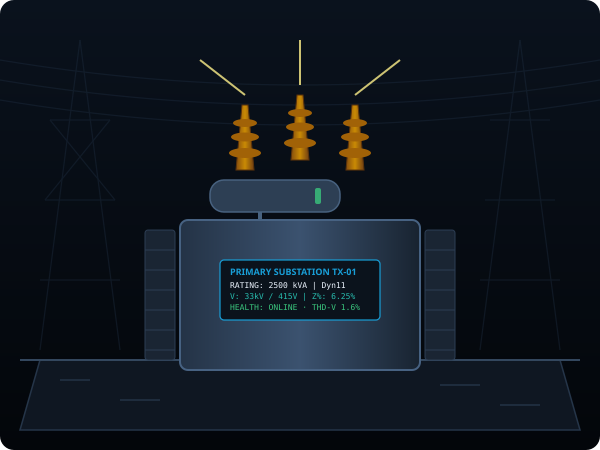
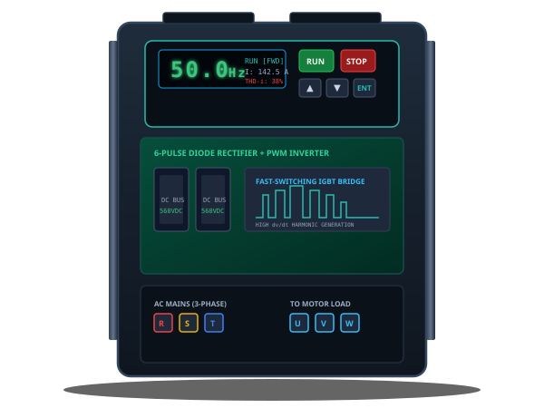

Power quality for demanding operations.
The right electrical response considers the loads, operating pattern, uptime requirement and consequences of interruption at the facility.
Start with the operating environment.
These sector perspectives help frame the first conversation. Relevant customer references and outcome metrics are published only with approval.
What is the system doing when the problem occurs?
Operating cycles, expansion history, harmonic load mix and the consequence of downtime are more useful than a generic equipment specification.
- What has changed at the facility?
- When does the issue occur?
- Which loads are operating at the time?
- What measurements, reports or diagrams are available?
From industry symptom to measurable next step.
Nexovolt can define a study, assessment or technical consultation path for issues including poor PF, capacitor failures, nuisance tripping, heating, harmonic distortion and uncertain capacity or loss.

Reliability & continuity
Prioritise risk, production continuity and critical electrical loads.

Variable operating conditions
Design around shifts, process changes and actual load behaviour.
Not sure where your problem fits?
Share the industry, installed equipment and electrical symptoms. We can help determine whether an assessment is the appropriate first step.